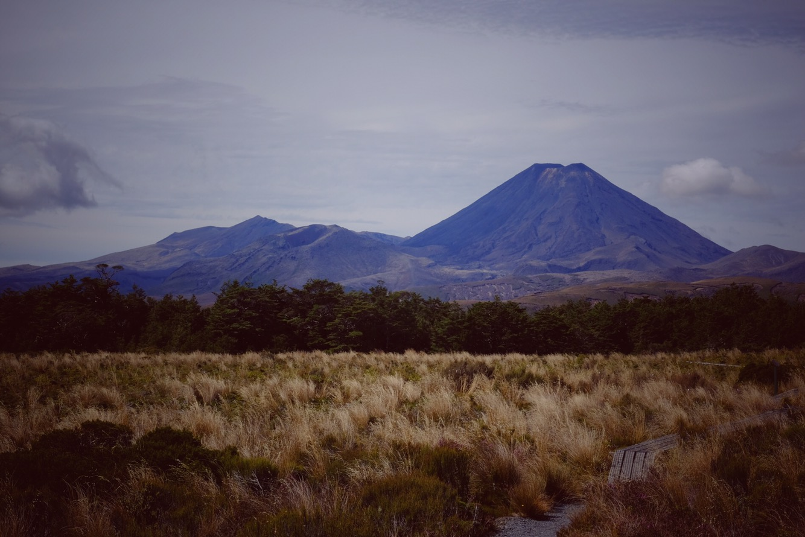

V pond캩l칤 jsme nav코t칤vili muzeum Te Papa Tongarewa, kde jsme bohu쬰l moc dlouho nevydr쬰li, jeliko m캩 stra코n캩 bolela hlava. Odpoledne jsme si za코li do sauny, abych si trochu proh콏치la z치dov칠 svaly, kter칠 jsem m캩la zna캜n캩 zatuhl칠. P콏izn치m se, moc to nepomohlo 游 Jsem prost캩 probl칠mov칳 jedinec, Mara u se na코t캩st칤 s t칤mto faktem sm칤콏il.
V 칰ter칳 jsme se vydali doplnit z치soby, vyprali, ochutnali super kari z 캜칤nsk칠ho bistra a na ve캜er kone캜n캩 vyrazili z Wellingtonu objevovat kr치sy severn칤ho ostrova.


Dal코칤 den n치s 캜ekala n치v코t캩va velik칠 lachtan칤 kolonie v Cape Pallister. Je to na nejji쬹캩j코칤m c칤pu severn칤ho ostrova. Cesta tam byla pom캩rn캩 dlouh치, ale na to, 쬰 je dosti neobydlen치 oblast, tam vede p캩kn치 silnice. Shodli jsme se, 쬰 tohle je dal코칤m m칤stem, kter칠 bychom mohli os칤dlit 游
Po cest캩 k lachtan콢m jsme se stavili u Putangirua Pinnacles, zvl치코tn칤ch kamenn칳ch 칰tvar콢 uprost콏ed divo캜iny. Jeliko se zvedla voda v m칤stn칤 콏칤캜ce, museli jsme slo쬴t캩 vyb칤rat cestu a n캩kolikr치t 콏칤캜ku p콏eskakovat. Na jedn칠 z fotek je vid캩t m칠 usilovn칠 p콏em칳코len칤 nad nejlep코칤 mo쬹ou cestou, jak dosk치kat na druhou stranu a nep콏ij칤t k 칰hon캩 游


Lachtani n치s o캜ividn캩 nikdy neomrz칤. V코ude okolo jich byly des칤tky, sp칤코e stovky. Maminy se v치lely a posp치valy, ml치캞ata sk치kala po kamenech a hr치la si ve vod캩. Byla to super pod칤van치. Legra캜n칤 jsou zvuky, kter칠 ml치캞ata vyd치vaj칤, kdy se do쬬duj칤 pozornosti. Mrkn캩te na video.


Ve 캜tvrtek jsme vyu쬴li slune캜n칠ho dne a nechali proschnout Emila. P콏ece jen po cel칠m de코tiv칠m t칳dnu byl dosti navlhl칳 a m캩l op캩t n치b캩h na pl칤sni캜ku. Dala jsem ho do pucu, v코e hodila na 코t캩rk proschnout a krize byla r치zem za쬰hn치na. Mara si zat칤m hodil do pucu svoje milovan칠 pohorky 游


Dal코칤 r치no jsme si p콏ivstali a vyrazili do Whanganui National Park, kde jsme m캩li napl치novan칳 v칳let na k치no칤ch po 콏ece Whanganui. Byli jsme odvezeni rychlolo캞kou proti proudu na m칤sto ur캜en칤, kde na n치s 캜ekaly k치noe s celou v칳bavou. Od za캜치tku bylo dost jasn칠, 쬰 pan kapit치n, kter칳 n치s na m칤sto odvezl, o mn캩 nem캩l zrovna vysok칠 m칤n캩n칤. Za캜alo to t칤m, 쬰 jsme s sebou na 4 hodiny m캩li tolik j칤dla, 쬰 by to n캩komu sta캜ilo na t콏i dny. Dal코칤 lib콢stkou byly moje pono쬶y v sand치lech. Nejsem velk칳 fanda t칠to praktiky, ale na lo캞 jsem si cht캩la vz칤t sand치le, proto쬰 se mi v캩t코inou nepoda콏칤 z k치noe vystoupit suchou nohou. Na druhou stranu jsem v캩d캩la, 쬰 po cest캩 lod칤 ke k치no칤m bude po콏치dn치 zima. Tak쬰 jsem m캩la dv캩 mo쬹osti, vz칤t si tenisky i sand치le nebo prost캩 do sand치l콢 nacpat tepl칠 merino pono쬶y. 콎칤kala jsem si, 쬰 na lodi p콏ece nemus칤m d캩lat velkou par치du, tak to jednou p콏e쬴ji. P콏i n치stupu na lo캞 jsem se okam쬴t캩 setkala s koment치콏em od kapit치na, jestli m치m opravdu pono쬶y v sand치lech. To tady tu 캛eskou republiku p캩kn캩 reprezentuji, 쬰? 游 Po p콏칤jezdu ke k치no칤m jsem tomu dala korunu. Marek chystal v캩ci do barelu a j치 se rozhodla, 쬰 si je코t캩 vyb캩hnu na kope캜ek se vy캜콢rat. V코ude okolo byla hromada bahna. P콏i de코t칤ch se 콏eka zved치 hodn캩 vysoko, tak쬰 p치r dn칤 zp캩t m캩la o p치r metr콢 v칤c. Logicky jsem p콏edpokl치dala, 쬰 캜칤m v칳코 p콢jdu, t칤m pevn캩j코칤 budu m칤t p콢du pod nohama. Jen쬰 ono nene. Za캜ala jsem se bo콏it do bahna a ka쬯칳m krokem jsem byla hloub캩ji a hloub캩ji v bahn캩. Pochopila jsem, 쬰 tudy cesta nevede a cht캩la vyrazit zp치tky k lo캞ce. No쬶y se mi zabo콏ily do bahna tak 코ikovn캩, 쬰 se mi jen horko t캩쬶o poda콏ilo vyndat je ven i s botama (na코t캩st칤 u jsem si pono쬶y sundala). No co v치m budu pov칤dat, vypadala jsem jako tot치ln칤 retard. Hanba m캩 fackovala hlavn캩 p콏i pohledu na kapit치na, kter칳 m캩l ve tv치콏i v칳raz typu: J치 v캩d캩l, 쬰 jsi vytupen치 blond칳na od chv칤le, co si vkro캜ila na mou lo캞 (v sand치le s pono쬶ou). Marek se mi sm치l pr콢b캩쬹캩 cel칳 den, abych na tuto groteskn칤 situaci n치hodou nezapomn캩la.


V sobotu jsme dorazili do Whakapapa vesnice, kde jsme nav코t칤vili m칤stn칤 info centrum a str치vili tam docela dost 캜asu kouk치n칤m na kr치tk칠 filmy o sopk치ch a dal코칤ch zdej코칤ch p콏칤rodn칤ch 칰kazech. Odpoledne jsme si pro코li dvouhodinov칳 trek do Silica Rapids jako takovou zah콏칤va캜ku p콏ed n치sleduj칤c칤m dnem. Zbytek dne jsme odpo캜칤vali a nab칤rali s칤ly.


V캜era jsme vyrazili na Tongariro Alpine Crossing, jeden z nejzn치m캩j코칤ch trek콢 na severn칤m ostrov캩. Tento trek za캜칤n치 na jin칠m m칤st캩 ne kon캜칤, tak쬰 si mus칤te za콏칤dit odvoz, kter칳 stoj칤 30 dolar콢 na osobu. Rozhodli jsme se zkusit 코t캩st칤 a na za캜치tek treku si dostopovat. R치no jsme vstali velmi brzo a chytli jsme hned prvn칤 auto, kter칠 proj칤쬯캩lo. Byly to dv캩 Ruskokana캞anky, velmi sympatick칳 holky, kter칠 v캩t코칤 캜치st treku 코ly s n치mi. (Potupn캩 mus칤m p콏iznat, 쬰 vy코ly minim치ln캩 p콢l hodiny po n치s, ale po cest캩 n치s dohnaly). Bylo fajn po dlouh칠 dob캩 poznat n캩koho nov칠ho a vyslechnout si jeho sny a 쬴votn칤 pl치ny. Po cest캩 se proch치z칤 sope캜nou oblast칤, tak쬰 cel칠 okol칤 je takovou m캩s칤캜n칤 krajinou bez 쬴vota. Asi v polovin캩 cesty jsou mal치 jez칤rka, kter치 pro m캩 byla nejhez캜칤 pod칤vanou za celou cestu. Na zp치te캜n칤 cest캩 je kr치sn칳 pohled na okoln칤 krajinu a st치le aktivn칤 kr치ter, ze kter칠ho se stabiln캩 zved치 p치ra. Cel칳 tento dojem bohu쬰l kaz칤 to ob콏칤 mno쬽tv칤 lid칤. Jsou to takov칠 masy, 쬰 na ur캜it칳ch 칰sec칤ch jsme 코li v 콏ad캩 jako mravenci. Byli jsme domluven칤, 쬰 Marek hod칤 holky zp캩t k jejich autu a j치 zat칤m po캜k치m na m칤st캩 a prot치hnu si z치da. M캩la jsem u sebe jen telefon bez sign치lu a j칩gamatku. Tuhle skute캜nost jsem si za캜ala uv캩domovat hlavn캩 ve chv칤li, kdy skoro po hodin캩 a p콢l Mara po콏치d nebyl zp캩t, i kdy cesta m치 zabrat 캜ty콏icet minut a hodinu. Samoz콏ejm캩 mi v hlav캩 valily sc칠n치콏e o tom, jak n캩kde p칤chnul pneumatiku nebo Emil op캩t odm칤tl nastartovat nebo se rozhodl ut칠ct s Ruskokana캞ankama a 쮂셦 promiskuitn칤m 쬴votem 游 U jsem vym칳코lela, jak budu muset bre캜et n캩jak칠mu 콏idi캜i autobusu u dve콏칤, aby m캩 a moji j칩gamatku hodil n캩kam do m캩sta, i kdy u sebe nem치m 쮂멳n칳 pen칤ze, a 쬰 mu za to d치m svoje n치u코nice do z치stavy 游 Nakonec se Mara p콏ece jen uk치zal a zdr쬰la ho zaj칤쮃끎a do m캩sta, proto쬰 musel natankovat. ( Prej 游 )





{kind=link}
{kind=link}
{kind=link}
{kind=link}
{kind=link}
{kind=link}
{kind=link}